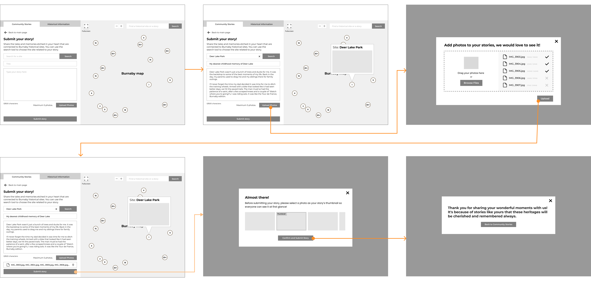

Heritage Burnaby Interactive Map
UX/UI Design, User Research, Interaction Design
An interactive historical map on the Heritage Burnaby website, shaped by stories from the community, marking the memories and evolution of Burnaby’s landscape and its landmarks over the past 100 years.
×

My Role
- User Researcher
- UX/UI Designer
- Interaction Designer
Team
- Jaxine Kurniawan
- Lori Jiang
- Kim Phan
- Zhaniya Yeltindinova
Tools
- Figma
- Miro
Duration
- 12 weeks - Fall 2023
Overview
In this senior-level interaction design course, teams partnered with a client to help identify a problem with one of their products and design a solution using technology. Our team worked with Heritage Burnaby.
The redesigned Heritage Burnaby map is catered towards Burnaby seniors and history lovers. It encourages community engagement by allowing anyone with a connection to Burnaby to share stories and photos linked to historical landmarks, bringing local history to life through interactive map visualizations.
My main roles were synthesizing research, preparing activities for participatory workshop, conceptualizing the story map idea, wireframing and prototyping the story submission process on both user and client sides.
The Problem at Hand
Heritage Burnaby is an online repository for Burnaby's historical archives, with the goal of promoting knowledge and exploration of Burnaby's history and building community bonds. They have an interactive map called the Charting Change Atlas which was created in 2010 to showcase how Burnaby's landscape has changed over time.
Since launching in 2010, the interactive map was initially popular but gradually lost its audiences and became inactive, leading our client to wonder whether the map had potential in drawing current interest if it was redesigned.
Understanding Our Users
Our target audience includes Burnaby seniors with a deep connection to local heritage, as well as history enthusiasts who love to learn more about the past. In order to understand the reasons why users are not motivated to engage with the map like when it was released, the team decided to conduct user interviews with these prospective users of the map to find out their frustrations, needs and goals with the map.
Map lacks clear purpose
Users find it is unnecessary to use the map nowadays because they can always find information by googling.
Poor navigation and usability
The difficult navigation and lack of essential tools like search bar or intuitive zoom feature of the maps cause frustration to the users.
Informative Text and Photos
The exclusive information and photos from Heritage Burnaby are informative and useful for users to understand a heritage site.
This insight made me realize that to attract users, we need to propose a new experience to attract user's interest, in addition to improving the user interface.
Design Statement
“How might we make the map relevant to seniors and history lovers to increase people's interest and engagement with the map while retaining it's historical/informational value?”
Participatory Workshop for Ideation
Discovering the Value in Story Map
To promote innovation and discover design opportunities, the team host a workshop with 5 participants: 3 Burnaby residents interested in Burnaby's history, 1 history student, and 1 museum supervisor.
During the workshop, an urban planning assistant highlighted that the map, created with Esri's StoryMaps, lacked the essence of a true story map. This prompted me to research further, revealing that Esri's StoryMaps has grown from 100 maps in 2011 to 2.2 million in 2023, which suggests there is value in the story mapping concept, but issues with its current execution.

Evident active interest shown in story sharing from Burnaby residents on Facebook
A participant from the workshop led me to discover a Facebook group called Burnaby Nostalgia with over 10,000 members. Members shared photos and memories of historical and recreational sites and hundreds of likes and comments were being exchanged daily.
This evidence drove me to propose transforming the map into a community story-sharing platform, integrating protected historical sites and beloved local spots.
Design Process
Initial Sketches
I started the ideation process by sketching down the layout for the main screens of our interaction. The team ended up going with the layout I sketched, but adapted some changes like changing the icon buttons to labeled buttons for seniors to easily recognize them and know what they are used for.
Mid-fidelity wireframes/user flow
Since I had already sketched out the flow for the story submission process, I took charge of creating the mid-fidelity wireframes to fine-tune the overall user flow for it. I chose Montserrat as the typeface because it is used on the main Heritage Burnaby website, and adapted some UI elements like the search button from their main pages to maintain branding consistency.
Early-stage analysis with client to discover potential issues
After finishing the mid-fidelity, we had a quick sesssion with Heritage Burnaby's curator to identify potential issues. For the story submission flow, I was able to get these two key insights:
Photo Copyright Notice
It's important for users to know that they retain full ownership of the copyright to any images they upload, and they agree to share the photos with Heritage Burnaby.
Missing Story Screening Process
Since there may be issues related to photo copyright and content, Heritage Burnaby need to review and audit the stories before they are published.
Refined Interface
Taking the insights from the analysis, I was able to finalize the final interface for the story submission, with addition to the client side for reviewing the stories.
User's control over submitted photos
Users can delete individual photos instead of removing all attached images, saving them extra steps if they only want to delete one. A photo copyright notice is also shown when they select a thumbnail and confirm their submission.
Accessing the AI assistance
AI reverse image search is integrated into the client's review process. When a potential issue is detected, the system provides a source image link to help the client verify whether copyright has been violated.
Introducing the New Heritage Burnaby Map
Discovering Stories
New landing page features a story map that highlights shared memories tied to their beloved landmarks across Burnaby, helping users connect with others who share similar experiences.
Story Submission - User Side
Streamlining story submission for both users and client through easily accessible submission page. Including word count and photo limit to ensure concise, impactful stories.
Story Submission - Client Side
With AI-assisted copyright detection, the administration team can manage community submissions by approving or declining posts and sending feedback via email to users.
Preserving Historical Information
Keeping historical context of landmarks in a separate tab from community-stories, since it was a positively viewed feature of the original map. Slider added for more control over desired date range.
Marketing Touchpoint
Promotion on Heritage Burnaby website and associated partner websites such as Burnaby Village Museum and City of Burnaby, as well as social media.
Reflection
Due to time constraints, we prototyped a minimal viable product for our client and did not have time to carry out usability testing to validate our design. However, conducting usability testing and developing more engaging ways for users to interact with the map's information would be my next step in furthering the project.